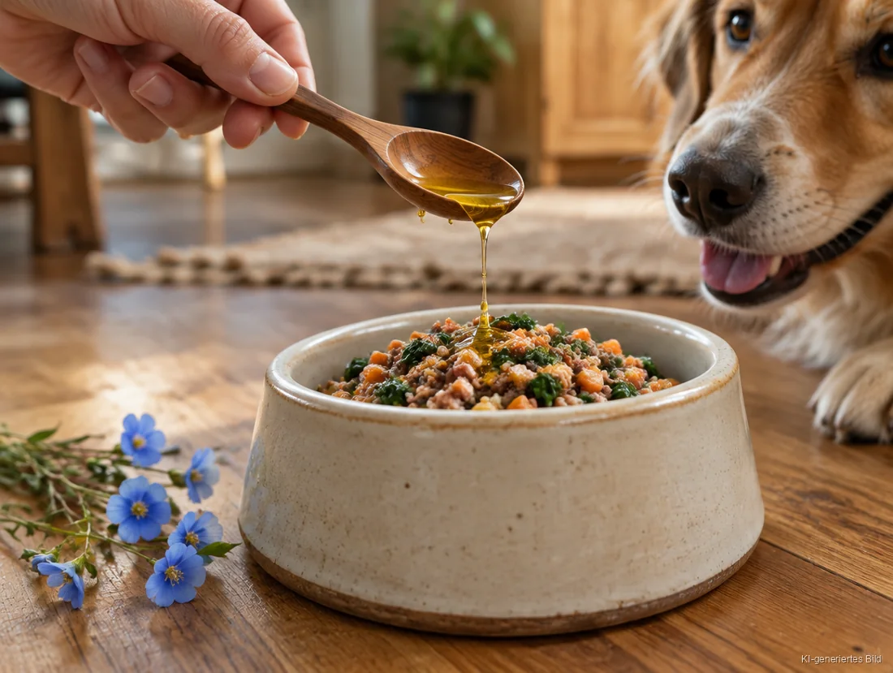
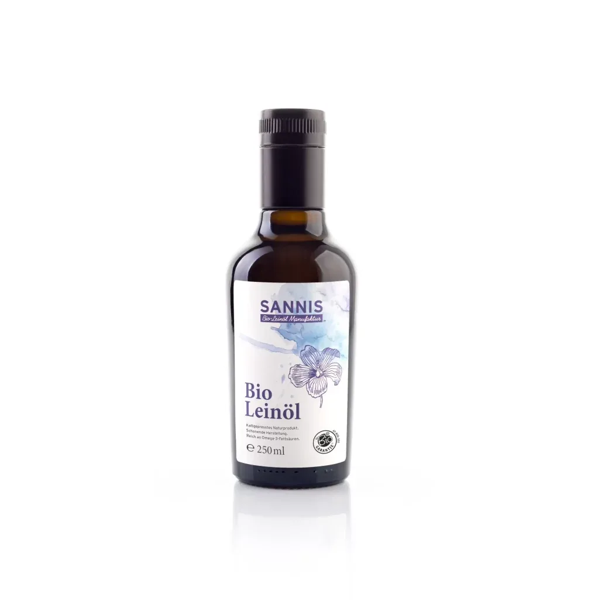
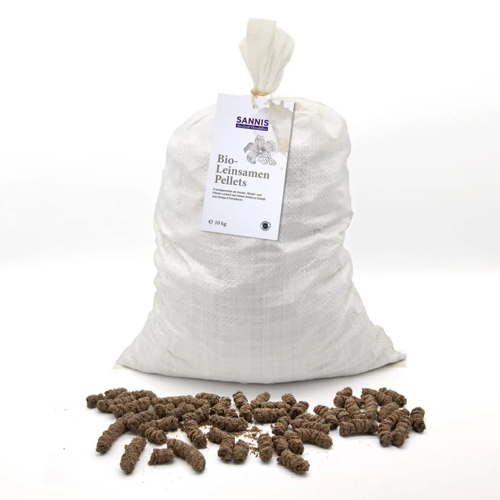

Kennst du diesen Blick? Der Napf steht noch nicht ganz am Boden, und schon wedelt der ganze Hund. In unserer Alpin Manufaktur in Wald am Arlberg hören wir eine Frage von Hundefreunden besonders oft: Darf Leinöl auch in den Napf? Verständlich, denn frisch gepresstes Leinöl ist eine der reichsten pflanzlichen Omega 3 Quellen überhaupt. Für den Hund heißt das: Ein kleiner Löffel Leinöl im Futter ergänzt die Ration um wertvolle Fettsäuren, als Orientierung rund ein Teelöffel pro 10 kg Körpergewicht am Tag. Ob Leinöl für den Hund unbedenklich ist, wie viel dein Hund verträgt und woran du gutes Leinöl erkennst: Hier sind die Antworten.
● Das Wichtigste in Kürze
- Nicht giftig: Die Blausäure-Frage betrifft Leinsamen, nicht das Öl. Die österreichische Behörde AGES bewertet Leinöl für den Menschen als unbedenklich, im Napf zählt vor allem die passende Menge.
- Wertvolle Fettsäuren: Leinöl besteht zu rund 55 % aus der pflanzlichen Omega 3 Fettsäure Alpha-Linolensäure und ergänzt die tägliche Ration.
- Dosierung: Als Orientierungswert gilt etwa ein Teelöffel (5 ml) pro 10 kg Körpergewicht am Tag. Langsam anfangen und mit kleinen Mengen starten.
- Kalorien beachten: Ein Teelöffel Leinöl liefert rund 40 kcal. Bei kleinen oder ruhigen Hunden zählt das mit.
- Qualität entscheidet: Bio-Saat, frische Pressung, ein hoher Omega 3 Anteil und eine lichtgeschützte Flasche. Ein bitterer Geschmack zeigt, dass ein Öl nicht mehr frisch ist.
Dürfen Hunde Leinöl bekommen? Ist es giftig?
Ja, Hunde dürfen Leinöl bekommen, es ist nicht giftig. Die oft gestellte Frage nach Blausäure betrifft Leinsamen, nicht das Öl. Die österreichische Agentur für Gesundheit und Ernährungssicherheit (AGES) hält für den Menschen fest, dass eine gesundheitliche Beeinträchtigung durch Leinöl als ausgeschlossen gilt. Eine eigene Bewertung für Hunde gibt es nicht, im Napf zählt deshalb vor allem die passende Menge.
Woher kommt die Sorge? Leinsamen enthalten von Natur aus sogenannte cyanogene Glykoside, aus denen bei der Verdauung Blausäure entstehen kann. Diese Stoffe sind wasserlöslich und gehen beim Pressen praktisch nicht ins Öl über. Die Details dazu stehen in der AGES-Bewertung zu cyanogenen Glykosiden in Leinsamen. Wie das beim Menschen mit geschroteten Samen aussieht, erklären wir im Beitrag Leinsamen geschrotet oder ganz.
Was bringt Leinöl dem Hund? Wirkung auf Haut und Fell
Leinöl ergänzt die Ration deines Hundes um pflanzliche Omega 3 Fettsäuren: Rund 55 % des Öls sind Alpha-Linolensäure, dazu kommt Linolsäure. Fettsäuren gehören zu einer ausgewogenen Hundeernährung für Haut und Fell. Was die Forschung zum Fell sagt, liest du gleich weiter unten.
Leinöl ist eines der Pflanzenöle mit dem höchsten Anteil an Omega 3. Das macht es für viele Hundebesitzer zur ersten Wahl, wenn sie das Futter mit einem natürlichen Öl abrunden möchten, gerade bei selbst zubereiteten Rationen und beim Barfen, wo das Futter sonst wenig pflanzliches Omega 3 mitbringt.
Und das schöne Fell? Dazu gibt es Daten: In einer Studie im Fachjournal Frontiers in Veterinary Science (2023) bekamen Hunde Futter mit Leinöl, Rapsöl oder Leindotteröl. Glanz und Weichheit des Fells nahmen in allen Ölgruppen zu, auch mit Leinöl. Leinöl bringt dabei von allen drei Ölen besonders viel Omega 3 mit.
Wie viel Leinöl für den Hund? Dosierung nach Körpergewicht
Als Orientierungswert gilt etwa ein Teelöffel Leinöl (5 ml) pro 10 kg Körpergewicht am Tag. Kleine Hunde bis 5 kg bekommen einen halben Teelöffel, große Hunde ab 30 kg rund drei Teelöffel. Beginne mit einem Viertel der Menge und steigere über ein bis zwei Wochen. Für die genaue Menge deines Hundes ist die Tierarztpraxis die beste Adresse.
Eine wissenschaftlich festgelegte Dosis für Leinöl beim Hund gibt es nicht. Gängige Ratgeber nennen Werte zwischen einem halben und zwei Teelöffeln pro 10 kg, die Angaben weichen also deutlich voneinander ab. Ein Teelöffel pro 10 kg liegt im unteren Bereich und ist damit ein vorsichtiger Start. Wir zeigen zusätzlich die Kalorien, denn Öl ist energiereich:
| Körpergewicht | Leinöl pro Tag | entspricht ca. |
|---|---|---|
| bis 5 kg | ½ Teelöffel (2,5 ml) | 20 kcal |
| 10 kg | 1 Teelöffel (5 ml) | 40 kcal |
| 20 kg | 2 Teelöffel (10 ml) | 80 kcal |
| 30 kg und mehr | 3 Teelöffel (15 ml) | 120 kcal |
Orientierungswerte für erwachsene, gesunde Hunde. Kalorien gerechnet mit rund 9 kcal pro Gramm Öl. Bei Welpen, trächtigen Hündinnen und Hunden mit Vorerkrankungen bitte vorher tierärztlich abklären.
Warum die Kalorien wichtig sind: Ein kleiner Hund mit 5 kg braucht je nach Aktivität nur einige hundert Kilokalorien am Tag. Schon ein halber Teelöffel Öl liefert rund 20 kcal davon. Wer das Öl dazugibt, kann die übrige Ration ein wenig anpassen, damit die Figur stimmt.
Leinöl richtig füttern: so klappt es im Alltag
Am einfachsten gibst du das Leinöl direkt vor dem Füttern über das Futter, egal ob Nassfutter, Trockenfutter oder BARF. Das Öl nicht erhitzen, sondern immer frisch dazugeben, denn die empfindlichen Omega 3 Fettsäuren mögen keine Hitze.

Beim Trockenfutter das Öl über die Kroketten träufeln und kurz durchmischen, so verteilt es sich gleichmäßig. Beim Nassfutter und beim Barfen einfach unterrühren. Am besten gibst du es täglich zur Hauptmahlzeit, so wird es zur festen Routine.
Bei mäkeligen Essern hilft ein Trick: mit wenigen Tropfen beginnen und die Menge Tag für Tag erhöhen. Ein bitteres Öl verrät übrigens, dass es nicht mehr frisch ist. Frisches Leinöl schmeckt dagegen mild und leicht nussig.
Nebenwirkungen beim Hund: Durchfall oder zu viel Leinöl?
Zu viel Öl auf einmal kann beim Hund zu weichem Kot oder Durchfall führen, und auf Dauer zu zusätzlichen Kilos. Wer langsam anfängt und bei der Orientierungsmenge bleibt, beugt dem einfach vor. Treten Verdauungsprobleme auf, die Menge reduzieren und bei anhaltenden Beschwerden die Tierarztpraxis fragen.
Das gilt für jedes Öl: Öl ist für den Hund eine konzentrierte Energiequelle, und der Darm braucht ein paar Tage, um sich an eine neue Zutat zu gewöhnen. Die tierärztliche Ernährungsberatung der Universität Guelph nennt Durchfall und Gewichtszunahme als typische Folgen einer zu hohen Omega 3 Ergänzung. Deshalb lieber mit einem Viertel der Menge starten und in Ruhe steigern.
Welches Leinöl für den Hund? Darauf kommt es an
Für den Hund zählt ein Leinöl aus biologischem Anbau, frisch gepresst, mit einem hohen Anteil an Omega 3 und in einer lichtgeschützten Flasche abgefüllt. Es sollte ohne Zusätze auskommen, und der Hersteller sollte transparent über Herkunft und Verarbeitung informieren. Frisches Leinöl schmeckt mild, ein bitterer Geschmack zeigt, dass es nicht mehr frisch ist.
Viele fragen, ob es ein spezielles Leinöl sein muss oder ob ein Leinöl aus dem Supermarkt reicht. Entscheidend ist nicht der Laden, sondern was in der Flasche steckt: Woher kommt die Saat, wie frisch ist das Öl, und wie hoch ist sein Omega 3 Anteil? Ein seriöser Hersteller beantwortet dir diese Fragen gern.
Genau das ist unsere Leidenschaft: In unserer Manufaktur in Wald am Arlberg verarbeiten wir Bio-Leinsaat in kleinen Chargen, Austria Bio zertifiziert (AT-BIO-301), und machen aus jeder Saat das Beste. Unser Bio-Leinöl extra nativ füllen wir in eine eigens entwickelte lichtundurchlässige Glasflasche ab. Es schmeckt so mild und nussig, dass es viele Familien morgens im Topfen lieben. Warum es in der menschlichen Ernährung so geschätzt wird, erklären wir im Ratgeber Ist Leinöl gesund?

Unser Maßstab für Qualität: Bio-Leinöl extra nativ
Kaltgepresst unter 29 Grad · rund 55 % Omega 3 (Alpha-Linolensäure) · mild und nussig · lichtundurchlässige Glasflasche · Austria Bio zertifiziert (AT-BIO-301).
Leinöl oder Leinsamen für den Hund?
Leinöl lässt sich genauer dosieren, Leinsamen bringen zusätzlich Eiweiß mit. Leinöl liefert die Omega 3 Fettsäure in konzentrierter Form und lässt sich tropfengenau dosieren. Leinsamen und Leinsamen-Pellets bringen zusätzlich pflanzliches Eiweiß und Ballaststoffe mit. Bei Leinsamen gilt: geschrotet oder als Pellets füttern, denn ganze Samen passieren den Hundedarm laut Fachleuten für Tierernährung weitgehend unverdaut.
Aus einer Saat entstehen bei uns zwei Produkte: das frisch gepresste Bio-Leinöl und der eiweißreiche Presskuchen, aus dem wir unsere Bio-Leinsamen-Pellets machen, eine natürliche Futterergänzung für Hunde und Pferde. Nichts wird verschwendet, die Saat gibt alles. Wie viel Leinsamen ein Hund bekommt und wie du ihn zubereitest, erklären wir im Ratgeber Leinsamen fürs Pferd kochen, quellen oder Pellets, inklusive eigenem Abschnitt für Hunde.

Für Hund und Pferd: Bio-Leinsamen-Pellets
Aus der schonenden Bio-Leinölpressung unter 29 Grad · reich an pflanzlichem Eiweiß, Omega 3 Fettsäuren und Vitamin E · Fütterungsempfehlung auf der Produktseite.
Tipps rund um Bio-Leinöl, Neues aus der Manufaktur und exklusive Specials, mit einer Portion Alpen-Lebensgefühl direkt in deine Inbox.
Häufige Fragen zu Leinöl für den Hund
Ist Leinöl für den Hund giftig?
Nein, Leinöl gilt nicht als giftig. Die Blausäure-Frage betrifft Leinsamen, nicht das Öl. Die österreichische Behörde AGES bewertet Leinöl für den Menschen als gesundheitlich unbedenklich. Beim Hund ist vor allem die passende Menge entscheidend.
Wie viel Leinöl darf ein Hund am Tag bekommen?
Als Orientierungswert gilt etwa ein Teelöffel (5 ml) pro 10 kg Körpergewicht am Tag: ein halber Teelöffel bis 5 kg, zwei Teelöffel bei 20 kg, rund drei Teelöffel ab 30 kg. Mit einem Viertel der Menge beginnen und langsam steigern.
Kann ich meinem Hund jeden Tag Leinöl geben?
Ja, viele Hundebesitzer geben Leinöl täglich zur Hauptmahlzeit. Wichtig ist, bei der Orientierungsmenge zu bleiben und die Kalorien im Blick zu behalten: Ein Teelöffel liefert rund 40 kcal.
Kann ich Leinöl auch unter Trockenfutter mischen?
Ja. Einfach direkt vor dem Füttern über die Kroketten träufeln und kurz durchmischen. Bei Nassfutter und beim Barfen rührst du das Öl unter. Das Öl nicht erhitzen.
Bekommt mein Hund von Leinöl Durchfall?
Bei zu viel Öl auf einmal kann der Kot weich werden. Wer mit kleinen Mengen beginnt und über ein bis zwei Wochen steigert, vermeidet das meist. Bei anhaltenden Verdauungsproblemen die Menge reduzieren und die Tierarztpraxis fragen.
Darf ich normales Leinöl aus dem Supermarkt nehmen?
Entscheidend ist nicht, wo du das Öl kaufst, sondern seine Qualität: Bio-Saat, frische Pressung, ein hoher Omega 3 Anteil und eine lichtgeschützte Flasche. Ein bitterer Geschmack zeigt, dass ein Öl nicht mehr frisch ist.
Dürfen Welpen Leinöl bekommen?
Bei Welpen, trächtigen oder säugenden Hündinnen und Hunden mit Vorerkrankungen besprichst du Futterergänzungen am besten vorher mit deiner Tierarztpraxis. Der Bedarf in diesen Lebensphasen unterscheidet sich deutlich von dem erwachsener Hunde.
Wie bewahre ich Leinöl am besten auf?
Hinweise zu Lagerung und Haltbarkeit findest du direkt auf der Produktseite unseres Bio-Leinöls. Dort steht immer der aktuelle Stand.
Fazit: Love, Life and Shine, auch im Hundenapf
Leinöl für den Hund ist eine einfache, natürliche Art, die tägliche Ration mit pflanzlichen Omega 3 Fettsäuren zu ergänzen. Es gilt als nicht giftig, lässt sich leicht dosieren und schmeckt frisch gepresst mild und nussig. Mit etwa einem Teelöffel pro 10 kg Körpergewicht, einem langsamen Start und einem Blick auf die Kalorien liegst du richtig.
Bei uns in Wald am Arlberg wird aus jeder Saat das Beste gemacht: das goldene Öl für den Frühstückstisch und der Presskuchen für die Pellets im Napf. Wenn am Napf der Schwanz wedelt und am Frühstückstisch der Topfen glänzt, dann ist das genau das, wofür SANNIS steht: ehrliche Naturprodukte aus Wald am Arlberg, mit Leidenschaft gepresst, für ein strahlendes Lebensgefühl, bei dir und deinem Liebling.